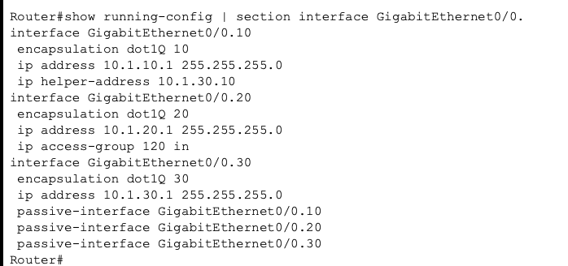
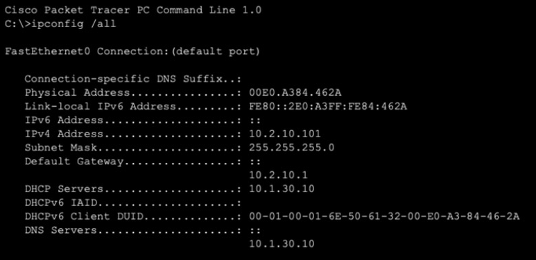
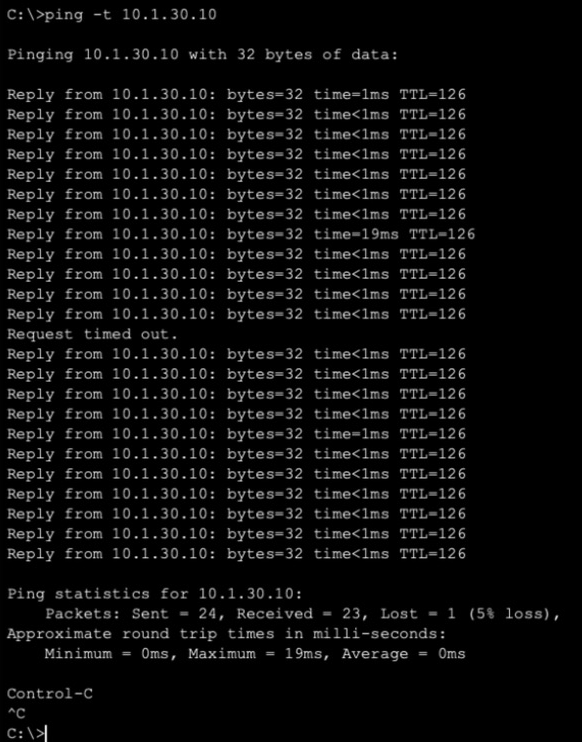
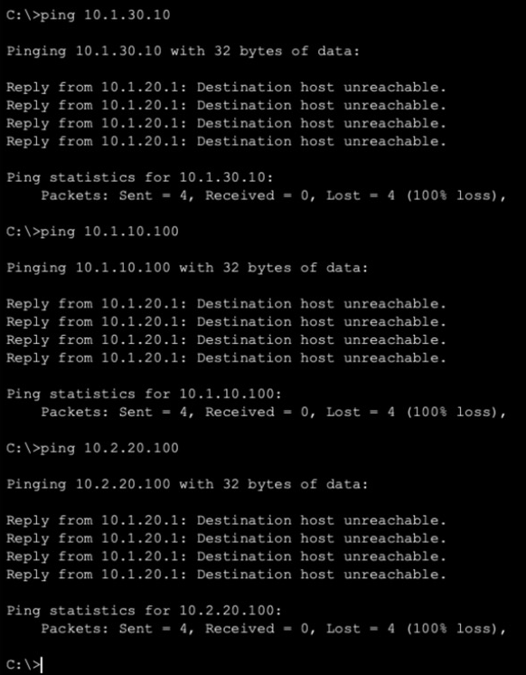

Cisco Packet Tracer
Two-site enterprise network
Designed and built a two-site hospital network in Cisco Packet Tracer: a main campus and a branch clinic carrying 5 subnets across 3 VLANs, one DHCP server serving staff at both sites over relay, OSPF failing over between redundant WAN links in about a second, and guests isolated behind an extended ACL that denies every internal subnet.

Addressing
| VLAN | Name | HQ subnet | Branch subnet |
|---|---|---|---|
| 10 | Staff | 10.1.10.0/24 | 10.2.10.0/24 |
| 20 | Guest | 10.1.20.0/24 | 10.2.20.0/24 |
| 30 | Servers | 10.1.30.0/24 | None |
Each site runs a Cisco 2911 router and a 2960 switch. Servers are centralized at HQ, so the Branch has no Server VLAN. Every subnet's gateway is the .1 address on its router subinterface.
VLANs and inter-VLAN routing
Each switch puts its devices into separate VLANs, so every group gets its own broadcast domain, its own subnet and a clean boundary for security rules. VLANs can't reach each other without a Layer 3 device, so each switch connects to its router over a single 802.1Q trunk that carries every VLAN and tags each frame with its VLAN ID.
On the router that one port is split into subinterfaces, one per VLAN, and each subinterface is the default gateway for its VLAN. The router takes in tagged traffic, routes it to the right subnet and sends it back down the same trunk. That single link is the "stick."

Centralized DHCP with relay
One server at 10.1.30.10 hands out staff addresses for both sites, so every pool is managed in one place. A new device asks for an address with a broadcast, and routers don't forward broadcasts, so each Staff subinterface carries ip helper-address 10.1.30.10. The router turns the broadcast into a unicast, forwards it to the server, and stamps it with its own interface IP (the giaddr) so the server knows which pool to answer from.

ipconfig /all on a Branch staff PC: its address came from the HQ server across the WAN, through the relay.OSPF with redundant WAN links
Both routers run OSPF and advertise their subnets to each other. OSPF picks paths by cost, so I left the primary link at its default and raised the cost on the backup to keep it idle until it's needed. The LAN subinterfaces are passive, so hellos only go out the WAN links.
To test failover I ran a continuous ping from a Branch PC to the HQ server and shut the primary link. OSPF moved the routes to the backup (metric 2 → 101) and one ping was lost, an outage of about a second. For a hospital that's the Availability leg of the CIA triad: the clinic stays connected when a link fails.

Guest isolation
Guests should only reach the internet, so they use no internal service at all. Each router is the DHCP server for its own Guest VLAN, handing out its own .1 as the gateway and 1.1.1.1 as DNS. The Guest subinterface has no helper-address, so guest requests never reach the HQ server.
ip dhcp pool GUEST_HQ
network 10.1.20.0 255.255.255.0
default-router 10.1.20.1
dns-server 1.1.1.1That only changes what guests are handed by default; the routes to every internal subnet still exist. Extended ACL 120, applied inbound on the Guest subinterface at both sites, is what actually enforces the boundary:
- permitDHCP to the guest's own gateway, so leases can renew.
- denyEvery
10.xnetwork: staff, servers and the other site's guests. - deny
172.16.0.0/12, the WAN links between the routers. - permitEverything else, which in a real network means the internet.
In production this would usually sit behind a firewall or a separate guest SSID with a captive portal, but the principle is the same: guests only reach the internet.
